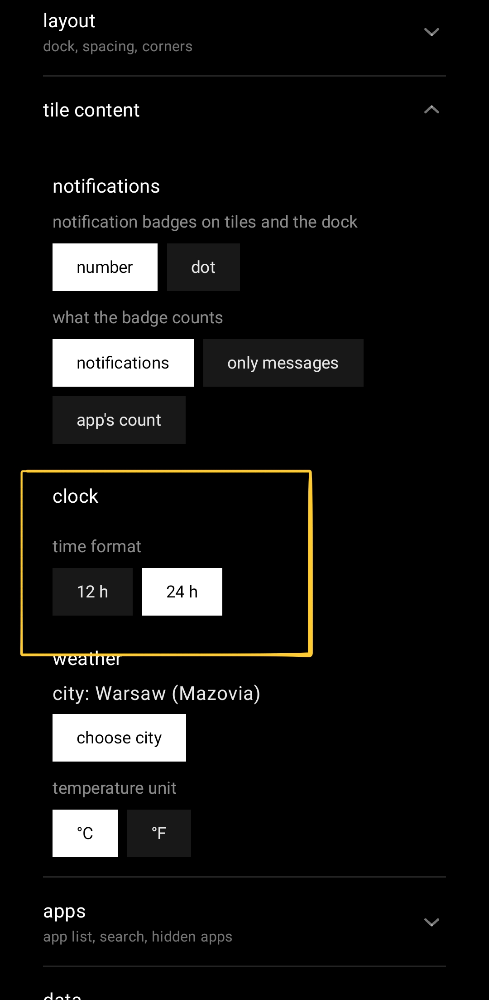

The clock stops guessing which hours you read
1.4.5 was meant to be a toolchain bump nobody would notice. It shipped a 12/24-hour clock setting, and a tile that stops slicing its own date.
The last post ended by promising that 1.4.5 would be boring: a toolchain bump, no features, the kind of release that doesn't get its own post. Two thirds of that is still true.
The clock stops guessing which hours you read
What ships. A clock section in settings, sitting above weather, with two chips: 12 h and 24 h. The choice covers every hour the launcher prints — the clock tile, calendar and reminder tiles, the event and reminder rows on the dashboard, the hourly weather strip, the time picker you get when adding a reminder, and the text of the reminder notification itself.

Leave it alone and it follows the 12/24-hour switch the phone already has. Not the language, not the region, the actual switch — an answer you gave your phone once already, and being asked for it a second time by a launcher is not a feature. Flip that switch in Android settings while sqTile is on screen and the grid redraws where it stands: the setting is watched with a ContentObserver, so there is no restart and no trip back to the home screen to make it take.
This is also why the answer does not live on LauncherSettings next to effectiveTemperatureUnit, where you would look for it first. Reading the system switch needs a Context, and that class travels through Gson into a backup file; it has no business holding one. It lives in a small repository instead, which joins the saved preference to the observer. In a backup, clockFormat is nullable with exactly the same meaning temperatureUnit has: a missing key, an explicit null and a name from a future version all land on "follow the phone".
There is no "auto" chip, and it costs something. I left it out because a third chip is a second way of saying what already happens by default. The consequence is real, though: once you tap 12 or 24, nothing in the interface puts it back to "follow my phone" again. The only way back is importing a backup with the field cleared. That is a deliberate choice and the first one I will reverse if anybody tells me it is wrong.
Two review findings, both of them quiet
A corrupt preferences file could have eaten a reminder. Reading the clock format landed before the reminder notification was posted, so an IOException out of a damaged DataStore file took the whole notification with it — the alarm fires, and you never hear about it. Worse, it was on a scope that deliberately carries no exception handler, so the same bad file would also take down the process. The read is harmless now: it fails back to the phone's own switch and the notification goes out regardless.
Localising the format nearly split the app's digits in two. The 24-hour branch was ignoring the locale it was handed. The obvious fix, formatting through String.format with a locale, turns out to be a different fix than the one needed: DateTimeFormatter localises text and keeps Western digits, while String.format localises the digits too. Applying the "obvious" one to half the class would have printed ٠٩ on the weather strip next to 09:00 in an event row on the same screen. Both branches go through the same formatter now.
The date the clock tile was slicing in half
Not from this release. maxLines = 1 with no overflow has been sitting on the clock tile's date since long before the clock setting existed, and Compose's default there is Clip, which cuts through the middle of a glyph rather than ending in an ellipsis. Every other single-line label on the desktop already passed Ellipsis. This one was missed, and nothing catches that: not lint, not a test, and not a preview at font scale 1.0.
At a large system font it showed up twice over. "Friday, 21 August" measured 436 px into about 354 px of tile, so it was cut horizontally, and the column ran past the bottom of the plate, so the tile cut it again vertically.
The fix is the same principle the AM/PM marker uses: measure, don't threshold. A small custom layout measures both lines against an open height and drops the date entirely when the pair will not fit, rather than picking a tile size and hoping. Width and height are treated differently on purpose — half a "PM" is not a meridiem, but "Friday, 21…" is still a date, because the weekday and the day number are the only reason to read that line at all. On the analog face the date shrinks instead of vanishing, since there it is the content rather than a caption under the digits.
Also in 1.4.5
- The toolchain, at last. Gradle 9.3.1 → 9.7.0, AGP 9.0.0 → 9.2.1, compileSdk 36.1 → 37.0, Compose BOM 2026.06.01 → 2026.08.00, Kotlin → 2.4.10, KSP → 2.3.11.
targetSdkdeliberately stays on 36: a release whose whole point is that nothing breaks does not also change runtime behaviour. - The version catalog had been lying. It declared Kotlin 2.0.21. Nothing was using that number — AGP 9 ships its own Kotlin, so 2.2.10 had been doing the compiling for months. Worth knowing if you read a
libs.versions.tomland assume it describes the build. - Eight standing lint errors cleared, none of which the new compileSdk introduced. I checked that rather than assumed it: lint ran against both SDK versions and the reports were diffed.
- 382 unit tests, up from 364.
- No performance claim here. The benchmark on file describes a build that never shipped, and I have not re-run it against this chain. A number I did not measure is not a number.
What's next
Tiles that move when a notification arrives. Right now a new message adds a dot or a count, which nobody notices unless they happen to be looking at that exact tile, so the tile face itself is going to react: a single sweep of light across the plate, or a vertical flip, whichever you pick, with a gentle scale pulse on dock icons instead. The flip is vertical because horizontal already means "this app is opening" and one movement cannot mean two things. It will never show what the notification says — badges here carry a count and nothing else, and that is not changing for an animation. It is specced in the open if you want to argue with any of it before it ships.
sqTile is on Google Play, in English, Polish, German, Italian and Ukrainian. Free, with a single one-time Pro unlock and no subscription. No ads, no analytics SDK, no account.